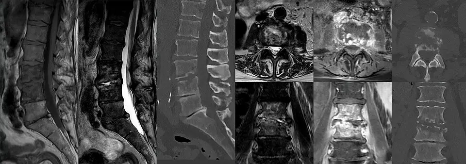

DX.8 — Spondylodiscite cervicale 🚩 E5
La spondylodiscite cervicale atteint un disque et les deux vertèbres voisines, surtout chez le sujet âgé, diabétique ou immunodépriméS1. Le médecin prélève les hémocultures avant tout antibiotique, confirme le foyer par l’imagerie par résonance magnétique (IRM) et documente le germeS4S3. L’antibiotique ciblé dure 6 à 12 semaines, et la chirurgie s’impose devant un déficit, un sepsis ou une instabilitéS3S1.
Ce cours DX.8 reprend les sources citées ; aucun médecin ne l’a encore validé cliniquement.
1. Définition
La spondylodiscite se définit comme une inflammation, le plus souvent bactérienne, d’un disque intervertébral et des deux vertèbres adjacentesS1. Elle devient cervicale lorsque l’infection siège entre les vertèbres du cou, une localisation rare mais neurologiquement menaçanteS7.
2. Épidémiologie (Suisse, puis Europe)
L’Inselspital de Berne observe que la maladie est de plus en plus diagnostiquée, car la population vieillit et les facteurs de risque progressentS1. En Allemagne, l’incidence de la spondylodiscite pyogène a doublé, de 5,4 pour 100 000 habitants en 2005 à 11,0 en 2021S6. La forme cervicale reste peu fréquente, avec une incidence de 0,5 à 2,5 pour 100 000 habitants selon une série allemande de 2024S7. Elle occupe donc le sixième rang de fréquence du lot dans la Phase A, mais le rang E5 de l’ordre d’exclusion. Les chiffres disponibles et la gravité mesurée précisent ces données.
Chiffres utiles : Suisse, puis Europe
| Donnée | Valeur | Lieu, période | Source |
|---|---|---|---|
| Fréquence en Suisse | Non chiffrée ; diagnostic en hausse selon l’Inselspital | Berne | S1 |
| Incidence de la spondylodiscite pyogène | 5,4 pour 100 000 en 2005, puis 11,0 en 2021, soit + 104 % | Allemagne, données fédérales | S6 |
| Nombre de diagnostics | 4457 en 2005, puis 9167 en 2021 | Allemagne | S6 |
| Incidence par âge en 2021 | 49,72 pour 100 000 entre 80 et 89 ans ; 36,51 entre 70 et 79 ans | Allemagne | S6 |
| Incidence de la forme cervicale | 0,5 à 2,5 pour 100 000 habitants | Allemagne, série de 2024 | S7 |
| Part cervicale dans une série hospitalière | 24 patients, soit 9 % des spondylodiscites du centre | Augsbourg, 2017 à 2022 | S7 |
| Rang de l’infection disco-vertébrale après 50 ans | Ostéomyélite hématogène la plus fréquente | France, 2023 | S4 |
Aucune source suisse lue ne mesure l’incidence nationale, si bien que les chiffres allemands servent de repère, ce qui reste une extrapolationS1S6.
Gravité : mortalité et séquelles
| Mesure | Valeur | Population | Source |
|---|---|---|---|
| Décès hospitaliers | 153 en 2005, puis 684 en 2021, soit + 347 % | Allemagne, toutes localisations | S6 |
| Mortalité hospitalière globale | 5,2 % | Allemagne, 2005 à 2021 | S6 |
| Atteinte neurologique | Jusqu’à 29 % des patients | Forme cervicale, littérature citée | S7 |
| Décès | 6 patients sur 24, soit 25 %, après une médiane de 20 jours | Forme cervicale, Augsbourg | S7 |
| Séquelles neurologiques définitives | 9 patients, soit 38 % | Forme cervicale, Augsbourg | S7 |
La série d’Augsbourg conclut que la forme cervicale reste grave malgré un traitement chirurgical et antibiotique adéquat, ce qui justifie son rang d’exclusionS7.
3. Physiopathologie
Les bactéries gagnent le plus souvent le rachis très vascularisé par voie sanguine, à partir d’un foyer à distance comme la bouche, la gorge, la peau ou les poumonsS1. Une chirurgie rachidienne antérieure peut aussi inoculer des bactéries cutanées, surtout lorsque des vis ou des implants ont été posésS1. Une collection purulente qui gagne le canal comprime ensuite les racines ou la moelle et provoque des déficitsS1. L’anatomie annotée situe ces structures, et les germes et terrains orientent l’antibiothérapie.
Anatomie cervicale utile à l’infection
Vertèbres cervicales. OpenStax représente en couleurs une vertèbre cervicale typique et la colonne cervicale, sur lesquelles se lit le trajet de l’infectionS8.

Le lecteur doit d’abord repérer seul le corps vertébral, le foramen vertébral, le foramen transversaire, la dent de l’axe et la vertèbre proéminente.
- Le corps vertébral, voisin du disque, s’infecte dans la spondylodiscite ; sa destruction peut aller jusqu’à l’effondrementS1S3S8.
- Le foramen vertébral contient la moelle ; un abcès épidural qui l’envahit la comprimeS1S8.
- Le foramen transversaire contient l’artère vertébrale, structure proche du foyer infectieux cervicalS8.
- La dent de l’axe marque la charnière haute, où une douleur fébrile fait aussi discuter la dent couronnéeS2S8.
- La septième vertèbre cervicale (C7) se repère par son processus épineux saillant au bas du couS8.
Le disque infecté transmet l’atteinte aux deux plateaux voisins, ce qui explique l’image en miroir des deux vertèbres à l’IRMS1S9.
Germes, voies d’infection et terrain
| Élément | Donnée | Conséquence | Source |
|---|---|---|---|
| Voie hématogène | Foyers buccaux, pharyngés, cutanés ou pulmonaires | Chercher la porte d’entrée | S1 |
| Voie post-opératoire | Bactéries cutanées sur vis et implants | Retrait ou remplacement du matériel souvent nécessaire | S1S4 |
| Staphylococcus aureus sensible à la méticilline | Germe le plus fréquent, 10 patients sur 24, soit 42 % | Pénicilline résistante à la pénicillinase | S7 |
| Streptocoques, entérocoques, entérobactéries | Germes documentés possibles | Antibiotique adapté à l’antibiogramme | S4 |
| Mycobactéries et champignons | Recherche systématique sur les prélèvements | Tuberculose rachidienne : prélèvements respiratoires ou ganglionnaires d’abord | S4 |
| Terrain | Âge, diabète, immunosuppression, chirurgie rachidienne | Risque accru d’infection | S1S6 |
4. Démarche diagnostique
La Société de pathologie infectieuse de langue française (SPILF) demande d’évoquer l’infection devant une rachialgie récente associée à une fièvre, une protéine C réactive (CRP) élevée ou une bactériémieS4. Le médecin prélève ensuite deux paires d’hémocultures avant tout antibiotique, puis il confirme le foyer par une imagerie par résonance magnétique (IRM) avec contrasteS4S3. L’identification du germe permet de cibler l’antibiothérapie, tandis que l’examen neurologique fixe l’urgence chirurgicaleS1S3. La séquence suit pas à pas les étapes de la démarche, et chaque étape porte son niveau d’urgence.
Étapes de la démarche, du soupçon au germe
| Étape | Action | Seuil ou critère | Conduite | Source |
|---|---|---|---|---|
| 1. Soupçonner | Cervicalgie d’effort récente et fébrile | Fièvre, CRP élevée ou bactériémie | Bilan infectieux | S4S1 |
| 2. Examiner | Signes vitaux, neurologie des quatre membres | Sepsis, déficit, trouble sphinctérien | Urgence si présent | S3 |
| 3. Prélever | Deux paires d’hémocultures aérobies et anaérobies, CRP | Avant tout antibiotique | Attendre le germe si l’état le permet | S4S3 |
| 4. Imager | IRM de la région suspecte sans puis avec gadolinium | Première intention | Scanner des segments atteints pour l’os | S3S4 |
| 5. Documenter | Ponction d’abcès, puis biopsie guidée par scanner | Hémocultures négatives | Cinq échantillons, avant antibiotique | S4S3 |
| 6. Chercher la source | Peau, gorge, dents, cœur | Staphylocoque, streptocoque ou entérocoque | Échocardiographie | S1S4 |
| 7. Décider | Antibiotique seul ou chirurgie | Critères neurologiques, mécaniques, septiques | Avis neurochirurgical et infectiologique | S3S1 |
Degré d’urgence selon le tableau
| Situation | Délai | Conduite | Source |
|---|---|---|---|
| Choc septique ou état préseptique | Immédiat | Hémocultures, antibiotique rapide, chirurgie précoce | S3S4 |
| Déficit neurologique nouveau, même discret | Immédiat | Décompression chirurgicale à discuter, avis urgent | S3S4 |
| Abcès épidural avec déficit | Immédiat | Chirurgie de décompression | S3 |
| Patient stable sans déficit | Dans les jours | Prélèvements avant antibiotique, biopsie si besoin | S4S3 |
Chez le patient stable, attendre le germe améliore le traitement, alors qu’un signe de gravité impose l’antibiotique rapide après les hémoculturesS4.
5. Anamnèse ciblée et drapeaux rouges
Les premiers symptômes consistent en douleurs du segment atteint, provoquées par l’effort ou le mouvement et parfois très prononcéesS1. Une fièvre, des frissons et une baisse de l’état général accompagnent souvent la douleur, mais leur absence n’exclut pas l’infectionS1S4. Au cou, une collection qui comprime les racines provoque des douleurs irradiant dans les bras, puis des paralysies ou des troubles sensitifsS1. Les questions ciblées, les drapeaux rouges et le terrain à risque guident l’interrogatoire.
Questions ciblées et réponses qui orientent
| Question | Réponse évocatrice | Hypothèse | Source |
|---|---|---|---|
| La douleur augmente-t-elle à l’effort et au mouvement ? | Douleur d’effort qui limite peu à peu la mobilité | Atteinte inflammatoire du segment | S1 |
| Avez-vous de la fièvre ou des frissons ? | Fièvre, frissons, malaise | Infection avec possible bactériémie | S1 |
| La douleur descend-elle dans un bras ? | Douleur radiculaire, faiblesse | Compression d’une racine par une collection | S1 |
| Avez-vous eu une opération du rachis ? | Chirurgie récente avec matériel | Infection post-opératoire | S1S4 |
| Avez-vous une plaie, un problème dentaire ou une infection récente ? | Foyer cutané, dentaire ou pulmonaire | Porte d’entrée hématogène | S1 |
| Les mains ou la marche ont-elles changé ? | Maladresse, instabilité | Compression médullaire | S7S1 |
Drapeaux rouges : hypothèse et conduite
| Drapeau rouge | Hypothèse | Conduite | Source |
|---|---|---|---|
| Fièvre et cervicalgie récente | Spondylodiscite, méningite (DX.5) | Hémocultures, CRP, IRM | S4S2 |
| Déficit moteur ou sphinctérien | Abcès épidural compressif | IRM immédiate, avis chirurgical | S3S7 |
| Hypotension, confusion | Sepsis | Réanimation, antibiotique rapide, chirurgie précoce | S3 |
| Souffle cardiaque nouveau | Endocardite associée | Échocardiographie | S1S4 |
| Inflammation de cicatrice rachidienne | Infection du site opératoire | Avis chirurgical, aucun prélèvement superficiel | S4 |
Terrain à risque
| Terrain | Pourquoi | Source |
|---|---|---|
| Âge avancé | Incidence maximale après 70 ans en Allemagne | S6 |
| Diabète sucré | Facteur de risque en hausse | S1S6 |
| Immunosuppression ou immunodépression | Risque accru d’infection | S1 |
| Maladie chronique | Risque accru d’infection | S1 |
| Chirurgie rachidienne antérieure, implants | Inoculation directe de germes cutanés | S1 |
| Âge supérieur à 50 ans | Infection hématogène osseuse la plus fréquente à cet âge | S4 |
6. Examen physique ciblé, région par région
L’examen physique approfondi permet déjà de soupçonner la spondylodiscite, avant toute biologie ou imagerieS1. Le médecin examine chaque région dans un ordre fixe : état général, cou, membres, périnée, puis portes d’entrée et cœur. Chaque région a sa fenêtre : état général, cou, membres et moelle, périnée, portes d’entrée et cœur.
État général et signes de sepsis
| Recherche | Anomalie | Interprétation | Source |
|---|---|---|---|
| Température, frissons | Fièvre | Infection active | S1 |
| Pression artérielle, fréquence cardiaque, conscience | Hypotension, tachycardie, confusion | Sepsis : chirurgie précoce à discuter | S3 |
| État général | Malaise, baisse de l’état général | Maladie systémique | S1 |
Dans la série d’Augsbourg, 17 patients sur 24, soit 71 %, présentaient un sepsis à l’admission, ce qui rend ces signes essentielsS7.
Cou et rachis cervical
Membres et signes médullaires
| Geste | Anomalie | Interprétation | Source |
|---|---|---|---|
| Cotation de la force selon le Medical Research Council (MRC) | Déficit radiculaire inférieur à 4 sur 5 | Indication opératoire | S3 |
| Cotation de la force | Parésie radiculaire de 4 sur 5 ou mieux | Traitement conservateur possible | S3 |
| Sensibilité des bras | Troubles sensitifs | Compression radiculaire ou médullaire | S1 |
| Réflexes, marche | Signes médullaires | Abcès épidural souvent associé | S7 |
Le consensus européen tient tout déficit neurologique nouveau, même discret, pour une indication de décompression et parfois de stabilisationS3.
Portes d’entrée à inspecter
| Région | Ce que le médecin cherche | Source |
|---|---|---|
| Peau | Plaie, abcès, cathéter, cicatrice inflammatoire | S1S4 |
| Gorge | Foyer pharyngé | S1 |
| Dents | Foyer dentaire | S1 |
| Poumons | Foyer infectieux pulmonaire | S1 |
L’Inselspital examine minutieusement la peau, la gorge et les dents lorsqu’aucune chirurgie rachidienne n’explique l’infectionS1.
7. Approche syndromique
Le syndrome associe une douleur axiale inflammatoire, un syndrome infectieux et parfois une compression radiculaire ou médullaireS1. La rhumatologie genevoise range la spondylodiscite parmi les cervicalgies inflammatoires, à côté de la méningite, des microcristaux et des rhumatismesS2. Le tableau syndromique permet de comparer la spondylodiscite aux diagnostics voisins du lot.
Syndromes et diagnostics à distinguer
| Diagnostic | Argument pour | Argument contre la spondylodiscite | Source |
|---|---|---|---|
| Méningite bactérienne (DX.5) | Fièvre, raideur de nuque | Céphalée, signes méningés, liquide cérébrospinal anormal | S2 |
| Myélopathie dégénérative (DX.3) | Signes médullaires | Évolution lente sans fièvre | S7 |
| Dent couronnée (DX.9) | Douleur haute fébrile du sujet âgé | Calcifications autour de la dent de l’axe | S2 |
| Pseudopolyarthrite rhizomélique | Douleur inflammatoire des ceintures | Pas de destruction discovertébrale | S2 |
| Néoplasie primaire ou secondaire | Cervicalgie inflammatoire | Histologie de la biopsie | S2S4 |
| Tuberculose rachidienne | Évolution plus lente, terrain | Prélèvements respiratoires ou ganglionnaires | S4 |
| Cervicalgie commune (DX.1) | Douleur du cou | Douleur mécanique sans fièvre ni CRP élevée | S2 |
8. Diagnostic positif et critères
Le diagnostic associe un tableau clinique compatible, une image typique à l’IRM et, idéalement, un germe isolé dans le sang ou dans un prélèvementS1S3. La forme compliquée se reconnaît à un abcès, un déficit, une déformation ou une instabilité, car ces éléments modifient la durée et le gesteS3. Les critères du diagnostic positif et les critères de forme compliquée figurent dans deux tableaux.
Critères du diagnostic positif
| Critère | Contenu | Ce qui ne suffit pas | Source |
|---|---|---|---|
| Clinique | Rachialgie récente, fièvre ou bactériémie | Une douleur cervicale isolée | S4 |
| Biologie | CRP élevée | Une leucocytose, moins sensible et parfois absente | S3 |
| Imagerie | IRM : disque et deux vertèbres adjacentes atteints | Une radiographie normale | S3S1 |
| Microbiologie | Hémocultures positives ou biopsie positive | Un prélèvement superficiel de fistule | S4 |
Critères de forme compliquée
| Critère | Seuil | Accord des experts | Source |
|---|---|---|---|
| Déficit radiculaire moteur | Force inférieure à 4 sur 5 | 100 % | S3 |
| Trouble vésical ou intestinal neurogène | Présent | 100 % | S3 |
| Cyphose | Plus de 20° | 88 % | S3 |
| Scoliose | Plus de 10° | 88 % | S3 |
| Effondrement du corps vertébral | Plus de 50 % | Seuil retenu dans la discussion | S3 |
| Instabilité du segment infecté | Présente | 92 % | S3 |
| État septique ou préseptique | Présent | 81 % | S3 |
| Douleur en charge rebelle | Malgré le traitement conservateur | 81 % | S3 |
Le consensus européen réserve une antibiothérapie de 12 semaines aux infections compliquées, ce qui rend ce classement décisif pour la duréeS3.
9. Examens complémentaires
L’IRM sans puis avec gadolinium constitue l’examen de première intention, et le scanner précise la destruction osseuseS3S4. Les hémocultures et la CRP précèdent tout antibiotique, puis la biopsie guidée par scanner documente le germe si les hémocultures restent négativesS4S3. Le tableau des examens ciblés, la lecture de l’IRM, la biopsie et la place des autres imageries précisent chaque indication.
Examens ciblés : indication, seuil, interprétation, conduite
| Examen | Indication | Seuil ou résultat | Interprétation | Conduite | Source |
|---|---|---|---|---|---|
| Hémocultures | Toute suspicion, avant antibiotique | Deux paires aérobies et anaérobies | Germe dans le sang | Antibiotique ciblé, recherche d’endocardite | S4S3 |
| CRP | Diagnostic et suivi | Élevée | Paramètre le plus utile | Mesure répétée au suivi | S3S4 |
| Leucocytes | Complément | Parfois normaux | Moins sensibles que la CRP | Ne pas rassurer à tort | S3 |
| IRM du segment sans puis avec contraste | Toute suspicion | Atteinte discovertébrale | Examen de référence | Chercher abcès et compression | S3S4 |
| IRM de tout le rachis | Recherche de lésions non contiguës | Accord de 77 %, sans consensus | Option discutée | Selon le contexte | S3 |
| Scanner des segments atteints | Évaluer l’os | Destruction osseuse | Planification | Avis chirurgical si destruction | S3 |
| Biopsie guidée par scanner | Hémocultures négatives et traitement non chirurgical | Cinq échantillons | Germe documenté | Antibiotique ciblé | S3S4 |
| Échocardiographie | Staphylocoque, streptocoque, entérocoque | Végétation | Endocardite | Prolonger et adapter | S4S1 |
IRM et scanner : lecture guidée
Spondylodiscite en IRM et au scanner. Ce cas lombaire d’un homme de 82 ans montre les signes recherchés au cou, en IRM puis au scannerS9.

Le lecteur doit d’abord repérer seul le disque en hypersignal, les plateaux érodés et la prise de contraste des deux vertèbres.
- En séquence pondérée en T2 (temps de relaxation transversale), le disque infecté devient hyperintense, signe de liquide inflammatoire dans l’espace discalS9S3.
- Au scanner en fenêtre osseuse, les plateaux vertébraux apparaissent érodés, ce qui mesure la destruction osseuseS9S3.
- Après gadolinium, la séquence pondérée en T1 (temps de relaxation longitudinale) avec saturation de graisse montre une prise de contraste du corps vertébral et des parties mollesS9S3.
- La coupe coronale après contraste montre l’atteinte des deux vertèbres de part et d’autre du disqueS9S1.
- Le sac dural, blanc en T2, reste à surveiller, car un abcès épidural le refouleraitS9S3.
Au cou, la même lecture cherche surtout un abcès épidural, présent chez 71 % des patients de la série d’AugsbourgS7.
Biopsie discovertébrale : règles pratiques
| Règle | Détail | Source |
|---|---|---|
| Moment | Avant l’antibiotique, ou après une fenêtre de 14 jours | S4 |
| Cible | Partie du disque qui prend le contraste | S3 |
| Nombre | Cinq échantillons | S4 |
| Analyses | Pyogènes, mycobactéries, champignons, histologie | S4 |
| Culture négative ou biopsie sous antibiotique | Biologie moléculaire | S4 |
| Première biopsie négative | Répéter, sauf signe de gravité | S4 |
| Infection sur matériel | Aucun prélèvement superficiel de fistule ou de cicatrice | S4 |
Place des autres imageries
| Imagerie | Place | Source |
|---|---|---|
| Tomographie par émission de positons (TEP) couplée au scanner | À défaut d’IRM ; cas choisis, ni bilan ni suivi de routine | S4S3 |
| Scanner injecté | Si IRM et TEP sont inaccessibles | S4 |
| Radiographies dynamiques | Montrer une instabilité sous-jacente | S4 |
| Scintigraphie | Non recommandée | S4 |
| Scanner de tout le rachis | Pas nécessaire | S3 |
| Radiographie standard du cou | Indiquée si risque d’infection, mais insuffisante seule | S2 |
10. Arbre décisionnel
L’arbre part du soupçon d’infection et répond successivement à la gravité, au germe et à la nécessité d’un geste chirurgicalS3S4. Ce tableau déroule l’arbre décisionnel du haut vers le bas et pose une seule question par ligne.
Arbre décisionnel en tableau
| Question | Si oui | Si non | Source |
|---|---|---|---|
| Sepsis, choc ou déficit neurologique nouveau ? | Hémocultures, antibiotique rapide, IRM, avis chirurgical urgent | Question suivante | S3S4 |
| IRM compatible avec une spondylodiscite ? | Chercher le germe | Autre diagnostic (DX.5, DX.9) | S3S2 |
| Hémocultures positives ? | Antibiotique ciblé et échocardiographie selon le germe | Ponction d’abcès ou biopsie guidée par scanner | S4S3 |
| Abcès avec déficit, instabilité, déformation ou douleur en charge rebelle ? | Chirurgie et antibiotique | Antibiotique seul et surveillance | S3 |
| Forme compliquée ? | Antibiotique 12 semaines | Antibiotique 6 semaines | S3S4 |
| CRP et douleur diminuent ? | Poursuite, puis arrêt à échéance | Réévaluer germe, collection et chirurgie | S3 |
11. Prise en charge selon les recommandations suisses
11.A But. Le traitement vise à éradiquer l’infection, à protéger la moelle et à préserver la stabilité du rachis cervicalS1S3. À l’Inselspital, les infectiologues participent dès le début au diagnostic et au traitement, à côté des chirurgiens du rachisS1.
11.B Moyens. L’antibiothérapie ciblée reste primordiale dès le début, et la chirurgie s’ajoute en cas de collection, de compression ou d’instabilitéS1S3. Le traitement structuré, les choix selon le germe et la chirurgie décrivent la stratégie. La flucloxacilline (Floxapen), la vancomycine (Vancomycine Sandoz) et la ceftriaxone (Rocephin) disposent chacune d’une fiche tirée de l’information professionnelle suisse (AIPS).
11.C Surveillance. La CRP et la douleur constituent les deux paramètres essentiels du suivi, avec deux contrôles par semaine pendant les deux premières semainesS3. Le calendrier de surveillance et les critères d’échec précisent les décisions.
11.D Pronostic. Un essai français a montré que 6 semaines d’antibiotique guérissent autant que 12 semaines, avec 90,9 % de guérison à un an dans chaque groupeS5. La forme cervicale reste pourtant de pronostic sévère, comme le montre le tableau pronostique.
Traitement structuré de la spondylodiscite cervicale
| Situation | Molécule ou geste | Dose AIPS ou modalité | Durée et contrôle | Critère d’échec | Source |
|---|---|---|---|---|---|
| Patient stable, germe inconnu | Aucun antibiotique avant les prélèvements | Hémocultures, puis biopsie si négatives | Jusqu’au germe | Aggravation clinique : antibiotique rapide | S4S3 |
| Sepsis, choc ou déficit neurologique, germe inconnu | Hémocultures puis antibiothérapie probabiliste immédiate ; avis chirurgical urgent | Molécule probabiliste de la spondylodiscite sur os natif non nommée par la SPILF : À vérifier | Jusqu’au germe, puis traitement ciblé | Choc persistant ou déficit qui s’aggrave | S4 |
| Staphylocoque sensible à la méticilline | Flucloxacilline, Floxapen | Perfusion : 2 à 8 g par jour en 3 ou 4 perfusions, au plus 2 g par perfusionS10 | 6 semaines si non compliquée ; CRP deux fois par semaine au début | CRP stable ou en hausse, douleur persistante | S10S3S4 |
| Staphylocoque résistant à la méticilline ou allergie aux bêtalactamines | Vancomycine, Vancomycine Sandoz | 15 à 20 mg/kg toutes les 8 à 12 heures, au plus 2 g par doseS11 | Creux sériques ; même durée selon la forme | Échec clinique ou creux insuffisant | S11S4 |
| Entérobactérie sensible | Ceftriaxone, Rocephin | 1 à 2 g une fois par jour, jusqu’à 4 g en infection sévèreS12 | 6 semaines ; relais oral selon l’antibiogramme | CRP stable, germe résistant | S12S4 |
| Streptocoque | Amoxicilline (hors AIPS, sans dose dans ce cours) | Selon l’antibiogramme | 6 semaines | Absence de réponse | S4 |
| Forme compliquée | Même molécule, durée prolongée | Au moins 2 semaines intraveineuses | 12 semaines | Persistance de la CRP ou de la douleur | S3 |
| Collection, déficit, instabilité | Chirurgie de décompression et parfois de stabilisation | Prélèvements peropératoires | Antibiotique 6 semaines après la chirurgie en cas d’infection post-opératoire | Révision si l’infection persiste | S3S4S1 |
Le consensus européen propose d’abord 2 semaines intraveineuses, alors que la SPILF admet un relais oral après 7 jours en cas de bactériémie, une divergence à signalerS3S4.
Choix antibiotique selon le germe documenté
| Germe | Traitement initial proposé | Relais oral proposé | Source |
|---|---|---|---|
| Staphylocoque sensible à la méticilline | Céfazoline ou pénicilline M (hors AIPS lue pour la céfazoline) | Clindamycine, ou lévofloxacine avec rifampicine, ou cotrimoxazole (hors AIPS, sans dose) | S4 |
| Staphylocoque résistant ou allergie aux bêtalactamines | Daptomycine ou vancomycine | Selon l’antibiogramme | S4 |
| Streptocoque | Amoxicilline | Amoxicilline, clindamycine ou lévofloxacine (hors AIPS, sans dose) | S4 |
| Entérocoque | Amoxicilline avec gentamicine ou ceftriaxone | Amoxicilline ou linézolide (hors AIPS, sans dose) | S4 |
| Entérobactérie | Ceftriaxone, céfotaxime ou lévofloxacine | Lévofloxacine (hors AIPS, sans dose) | S4 |
| Pseudomonas aeruginosa | Selon la sensibilité, avec avis infectiologique | Ciprofloxacine (hors AIPS, sans dose) | S4 |
| Infection sur matériel | Rifampicine avec lévofloxacine si les deux sont actives | Même association | S4 |
Ces schémas viennent de la recommandation française, et seules les trois molécules munies d’une fiche portent une dose tirée de l’AIPS dans ce coursS4.
Chirurgie : indications et techniques
| Indication | Geste | Accord des experts | Source |
|---|---|---|---|
| Déficit neurologique nouveau | Décompression, parfois stabilisation | 100 % | S3 |
| Abcès épidural avec déficit | Décompression | 100 % | S3 |
| Instabilité du segment | Stabilisation | 92 % | S3 |
| Sepsis | Chirurgie précoce | 81 % | S3 |
| Douleur en charge rebelle | Stabilisation | 81 % | S3 |
| Forme très avancée | Ablation du disque, vis et tiges, implant en titane avec substitut osseux imprégné d’antibiotique | Pratique de l’Inselspital | S1 |
| Infection précoce sur matériel, moins d’un mois | Irrigation et débridement | Recommandation française | S4 |
| Infection tardive sur matériel, plus d’un mois | Remplacement ou retrait du matériel | Recommandation française | S4 |
Dans la série cervicale d’Augsbourg, la voie chirurgicale influençait le risque de reprise, et 3 formes compliquées opérées par double voie sur 5 ont été réviséesS7.
Flucloxacilline — Floxapen® (n° 37404)
| Rubrique | Contenu de l’AIPS (information professionnelle suisse) |
|---|---|
| Indication | « Traitement des infections à staphylocoques producteurs de pénicillinase (exception: résistance à la méthicilline), sensibles à la flucloxacilline, par exemple: » ; la liste comprend « ostéomyélite » et « septicémies »S10. |
| Posologie de l’adulte | « L'application parentérale est indiquée en cas d'infections sévères, telles que l'ostéomyélite, la septicémie à staphylocoques et l'endocardite, ou si l'administration par voie orale n'est pas possible »S10 ; « Perfusion: 2 à 8 g par jour en 3 ou 4 perfusions rapides (20 à 30 minutes). Ne pas administrer plus de 2 g par perfusion. »S10 |
| Insuffisance rénale | « Lors d'une clairance de la créatinine inférieure à 10 ml/min, la posologie préconisée est de 1 g toutes les 8 à 12 heures. »S10 |
| Contre-indications | « Hypersensibilité: Floxapen ne doit pas être administré aux patients présentant une hypersensibilité aux pénicillines ou aux céphalosporines. » « Injections intra-artérielles: Floxapen ne doit pas être injecté par voie intra-artérielle. » « Apparition d'un ictère ou de troubles de la fonction hépatique dans l'anamnèse, signalée en rapport avec Floxapen. »S10 |
| Grossesse | « Les études de reproduction menées chez l'animal n'ont mis en évidence aucun risque foetal; on ne dispose cependant d'aucune étude contrôlée chez la femme enceinte. La plus grande prudence s'impose, par principe, lorsque Floxapen est administré au cours de la grossesse, puisque la flucloxacilline franchit la barrière placentaire. »S10 |
| Allaitement | « Etant donné que la flucloxacilline passe dans le lait maternel, une diarrhée (attention à la colite pseudo-membraneuse) et une candidose risquent de survenir chez le nourrisson. Il existe en outre le risque d'une sensibilisation (réactions d'hypersensibilité). Il convient donc de limiter l'administration de Floxapen aux cas où le bénéfice thérapeutique escompté pour la mère l'emporte sur le risque encouru par le foetus ou le nourrisson. »S10 |
| Mise à jour | Janvier 2025S10. |
La recommandation française cite la cloxacilline, molécule voisine, alors que l’AIPS suisse lue porte la flucloxacilline, ce qui reste une transpositionS4S10.
Vancomycine — Vancomycine Sandoz® i.v. (n° 57236)
| Rubrique | Contenu de l’AIPS (information professionnelle suisse) |
|---|---|
| Indication | « Pour le traitement des infections sévères dues à des germes résistants à la méticilline ou aux céphalosporines, mais sensibles à la vancomycine. » La liste comprend les « Infections des os et des articulations »S11. |
| Posologie de l’adulte | « La dose recommandée est de 15 à 20 mg/kg de poids corporel toutes les 8 à 12 heures (la dose individuelle maximale est de 2 g). » « Chez les patients gravement malades, on peut administrer une dose de charge de 25 à 30 mg/kg afin d'atteindre rapidement les valeurs cibles du creux sérique de vancomycine. »S11 |
| Ajustement | « Les ajustements posologiques consécutifs doivent être faits en fonction des concentrations sériques, de manière à atteindre les concentrations cibles thérapeutiques. »S11 |
| Contre-indications | « Il ne faut pas utiliser Vancomycine Sandoz chez les patients présentant une hypersensibilité connue à l'une des composantes de ce médicament. »S11 |
| Grossesse | « Il est impossible de se prononcer formellement sur l'innocuité de la vancomycine pendant la grossesse ou sur son éventuel effet sur la fertilité. » « Le chlorhydrate de vancomycine ne doit être administré à des femmes enceintes qu'en cas de nécessité absolue. »S11 |
| Allaitement | « La vancomycine étant excrétée dans le lait maternel, elle ne doit être utilisée qu'en cas de nécessité absolue pendant l'allaitement. »S11 |
| Mise à jour | Mars 2026S11. |
L’AIPS fonde la dose sur le poids et la fonction rénale, si bien que le dosage du creux sérique fait partie du traitementS11.
Ceftriaxone — Rocephin® (n° 44625)
| Rubrique | Contenu de l’AIPS (information professionnelle suisse) |
|---|---|
| Indication | « Infections dues à des germes sensibles à la ceftriaxone, telles que: » ; la liste comprend « la septicémie » et « les infections des os, des articulations, des tissus mous, de la peau et des plaies »S12. |
| Posologie de l’adulte | « En général, 1 - 2 g de Rocephin une fois par jour (toutes les 24 heures). Lors d'infections sévères ou en présence de germes moyennement sensibles, la dose quotidienne unique peut être augmentée jusqu'à 4 g. »S12 |
| Contre-indications | « Rocephin est contre-indiqué chez les patients présentant une hypersensibilité connue à la ceftriaxone, à l'un des excipients ou à toute autre céphalosporine. » « Les solutions de ceftriaxone contenant de la lidocaïne ne doivent en aucun cas être administrées par voie intraveineuse. » « Rocephin est contre-indiqué chez les prématurés jusqu'à un âge post-menstruel de 41 semaines (âge gestationnel + âge postnatal). »S12 |
| Grossesse | « Bien que les études précliniques correspondantes n'aient permis de déceler aucune propriété tératogène, Rocephin ne doit être administré pendant la grossesse, particulièrement au cours des trois premiers mois, que lorsqu'il est formellement indiqué. »S12 |
| Allaitement | « Étant donné que la ceftriaxone, même si ce n'est qu'en faible quantité, et la lidocaïne (contenue dans le solvant pour l'injection i.m.) sont excrétées dans le lait maternel, la préparation ne doit pas être utilisée durant la période d'allaitement. Si un traitement s'avère absolument nécessaire, l'allaitement doit être interrompu. »S12 |
| Mise à jour | Juin 2025S12. |
La ceftriaxone convient aux entérobactéries sensibles selon la recommandation française, tandis que l’antibiogramme reste le juge final du choixS4S12.
Calendrier de surveillance
| Moment | Contrôle | Objectif | Source |
|---|---|---|---|
| Deux premières semaines | CRP deux fois par semaine, douleur | Juger la réponse précoce | S3 |
| Chaque semaine ensuite | CRP, douleur, tolérance de l’antibiotique | Viser une baisse d’environ 50 % par semaine | S3S4 |
| Traitement conservateur | Radiographies en position debout régulières | Exclure une déformation secondaire | S3 |
| Après stabilisation | Radiographie post-opératoire, puis à 6 semaines, 3 mois et 1 an | Contrôler le matériel et la fusion | S3 |
| Fin de traitement | Arrêt à 6 ou 12 semaines si CRP normale et douleur résolue | Éviter un arrêt prématuré | S3 |
| De 2 à 4 semaines après l’arrêt | CRP et symptômes chaque semaine | Dépister une rechute | S3 |
| Long terme | Suivi au moins 1 an sans matériel, 2 ans avec matériel | Dépister une rechute tardive | S4 |
Le consensus européen juge l’IRM de contrôle facultative, car sa valeur pour suivre la guérison reste incertaineS3.
Critères d’échec et conduite
| Signe d’échec | Hypothèse | Conduite | Source |
|---|---|---|---|
| CRP qui ne baisse pas | Germe mal couvert, collection non drainée | Revoir l’antibiogramme, imagerie, avis chirurgical | S3 |
| Douleur persistante en charge | Instabilité | Stabilisation chirurgicale | S3 |
| Déficit neurologique nouveau | Abcès épidural | Décompression urgente | S3 |
| Déformation à la radiographie debout | Effondrement vertébral | Avis chirurgical | S3 |
| Rechute après l’arrêt | Infection incomplètement traitée | Nouveaux prélèvements et traitement | S3S4 |
Pronostic : données mesurées
| Donnée | Valeur | Population | Source |
|---|---|---|---|
| Guérison à un an après 6 semaines | 160 sur 176, soit 90,9 % | Essai français, toutes localisations | S5 |
| Guérison à un an après 12 semaines | 159 sur 175, soit 90,9 % | Essai français | S5 |
| Différence entre les groupes | 0,05 % (intervalle de confiance de -6,2 à 6,3) | Non-infériorité démontrée | S5 |
| Décès dans l’essai | 8 % sur 6 semaines, 7 % sur 12 semaines | Essai français | S5 |
| Décès dans la forme cervicale | 25 % | Série d’Augsbourg | S7 |
| Séquelles neurologiques définitives | 38 % | Série d’Augsbourg | S7 |
L’Inselspital souligne qu’une chirurgie bien choisie peut améliorer considérablement le pronostic, d’où la décision conjointe avec les autres disciplinesS1.
12. Prévention
La prévention vise d’abord la porte d’entrée et la contamination du site opératoire, puis la rechute après le traitementS1S4. Le tableau des mesures associe chaque geste à son but.
Mesures de prévention
| Mesure | But | Source |
|---|---|---|
| Traiter le foyer cutané, dentaire ou pharyngé | Supprimer la source hématogène | S1 |
| Surveiller la cicatrice après chirurgie rachidienne | Reconnaître tôt une infection du site opératoire | S4 |
| Rechercher une endocardite | Éviter une source persistante | S4S1 |
| Respecter la durée complète de l’antibiotique | Prévenir la rechute | S3S5 |
| Contrôler CRP et symptômes après l’arrêt | Dépister une rechute précoce | S3 |
Le contrôle du diabète figure ici comme une déduction de lecture, puisque les sources citent le diabète comme facteur de risque sans étudier son contrôleS1S6.
13. Points clés
- Une cervicalgie récente d’effort avec fièvre, CRP élevée ou bactériémie impose de penser à la spondylodisciteS4S1.
- Les hémocultures précèdent tout antibiotique chez le patient stable, puis une biopsie guidée documente le germe si elles restent négativesS4S3.
- L’IRM avec contraste confirme le diagnostic et recherche l’abcès épidural, fréquent au couS3S7.
- Un déficit neurologique nouveau, un sepsis ou une instabilité imposent un avis chirurgical urgentS3.
- La durée de référence reste de 6 semaines, prolongée à 12 semaines dans les formes compliquéesS3S5.
- La CRP et la douleur guident le suivi et l’arrêt du traitementS3.
- La forme cervicale garde une mortalité et des séquelles élevées malgré un traitement adéquatS7.
14. Pièges et questions fréquentes à l’examen fédéral suisse
Les pièges tiennent au retard du prélèvement, à l’antibiotique donné trop tôt et à la sous-estimation du risque neurologiqueS4S7. Les pièges classiques, les questions fréquentes et les cas commentés préparent au raisonnement clinique demandé à l’examen fédéral.
Pièges classiques et parade
| Piège | Conséquence | Parade | Source |
|---|---|---|---|
| Antibiotique avant les hémocultures chez un patient stable | Germe jamais identifié | Prélever d’abord, ou fenêtre de 14 jours avant biopsie | S4 |
| Se rassurer devant des leucocytes normaux | Diagnostic manqué | Doser la CRP | S3 |
| Se contenter d’une radiographie | Lésion précoce invisible | IRM avec contraste | S3S4 |
| Oublier l’échocardiographie | Endocardite méconnue | L’ordonner selon le germe | S4 |
| Prélever une fistule superficielle | Germe trompeur | Prélèvement profond | S4 |
| Arrêter l’antibiotique sur la seule durée | Rechute | Exiger CRP normale et douleur résolue | S3 |
| Immobiliser au lit par principe | Déconditionnement sans bénéfice | Alitement exclu du traitement conservateur | S3 |
Questions fréquentes
| Question | Réponse attendue | Source |
|---|---|---|
| Quel examen confirme la spondylodiscite ? | L’IRM du segment sans puis avec gadolinium | S3S4 |
| Que faire si les hémocultures restent négatives ? | Ponction d’abcès ou biopsie guidée par scanner, avec cinq échantillons | S4S3 |
| Combien de temps dure l’antibiothérapie ? | 6 semaines ; 12 semaines dans les formes compliquées | S3S4 |
| Quel paramètre biologique suit le traitement ? | La CRP, avec la douleur | S3 |
| Quand opérer ? | Déficit nouveau, abcès compressif, sepsis, instabilité, déformation, douleur en charge rebelle | S3 |
| Le corset est-il indispensable ? | Non, il reste optionnel, d’intérêt incertain, et se prescrit sur avis spécialisé | S3S4 |
| Pourquoi une échocardiographie ? | Une endocardite accompagne parfois les infections à staphylocoque, streptocoque ou entérocoque | S4 |
| Quel germe domine ? | Staphylococcus aureus sensible à la méticilline dans la série cervicale | S7 |
Cas commentés
| Situation | Raisonnement | Conduite | Source |
|---|---|---|---|
| Homme de 72 ans diabétique, cervicalgie d’effort depuis trois semaines, fièvre | Terrain et clinique typiques | Hémocultures, CRP, IRM avec contraste | S1S4 |
| Même patient, faiblesse nouvelle du bras à 3 sur 5 | Déficit inférieur à 4 sur 5 | Chirurgie de décompression | S3 |
| Hémocultures négatives, patient stable | Germe inconnu | Biopsie guidée par scanner avant antibiotique | S4S3 |
| CRP divisée par deux chaque semaine, douleur en baisse | Bonne réponse | Poursuite jusqu’à 6 semaines puis arrêt | S3 |
| Patient opéré avec matériel il y a trois mois, cicatrice inflammatoire | Infection tardive sur matériel | Avis chirurgical, retrait ou remplacement du matériel | S4 |
Sources
Les sources ont été lues le 13.11.2026 (Europe/Zurich) ; une source non européenne est signalée comme telle.
- [S1] Schär R, Montalbetti M, clinique universitaire de neurochirurgie de l’Inselspital de Berne. Spondylodiscite, page institutionnelle (texte intégral lu le 13.11.2026). https://neurochirurgie.insel.ch/fr/maladies-traitees-specialites/colonne-vertebrale/spondylodiscite
- [S2] Nissen M, service de rhumatologie des Hôpitaux universitaires de Genève (HUG). Cervicalgies non traumatiques, atelier de médecine physique et de réadaptation, 2021 (texte intégral lu le 13.11.2026). https://www.hug.ch/sites/interhug/files/atelier_mpr/cervicalgies-non-traumatiques_nissen.pdf
- [S3] Kramer A, Thavarajasingam SG, Neuhoff J et al. Diagnosis and management of de novo non-specific spinal infections: European Association of Neurosurgical Societies (EANS) Spine Section Delphi consensus recommendations. Brain Spine 2025;5:104178, doi:10.1016/j.bas.2024.104178, PMC11763570 (Europe, un auteur bernois associé ; texte intégral lu le 13.11.2026). https://pmc.ncbi.nlm.nih.gov/articles/PMC11763570
- [S4] Alfandari S, Société de pathologie infectieuse de langue française (SPILF). Info-antibio n° 98, mai 2023 : infection disco-vertébrale de l’adulte (spondylodiscite), synthèse des recommandations SPILF 2023, Infect Dis Now doi:10.1016/j.idnow.2023.01.007 (France ; texte intégral de la synthèse lu le 13.11.2026). https://www.infectiologie.com/UserFiles/File/spilf/atb/info-antibio/info-antibio-2023-05-idv.pdf
- [S5] Bernard L, Dinh A, Ghout I et al. Antibiotic treatment for 6 weeks versus 12 weeks in patients with pyogenic vertebral osteomyelitis: an open-label, non-inferiority, randomised, controlled trial. Lancet 2015;385(9971):875-882, doi:10.1016/S0140-6736(14)61233-2 (France ; résumé lu le 13.11.2026 via PubMed). https://doi.org/10.1016/S0140-6736(14)61233-2
- [S6] Kramer A, Thavarajasingam SG, Neuhoff J et al. Epidemiological trends of pyogenic spondylodiscitis in Germany: an EANS Spine Section Study. Sci Rep 2023;13:20225, doi:10.1038/s41598-023-47341-z, PMC10657388 (Allemagne ; texte intégral lu le 13.11.2026). https://pmc.ncbi.nlm.nih.gov/articles/PMC10657388/
- [S7] Motov S, Stemmer B, Krauss P et al. Clinical and surgical outcome in patients with cervical spondylodiscitis — a single-center retrospective case series of 24 patients. Front Surg 2024;11:1292977, doi:10.3389/fsurg.2024.1292977 (Augsbourg, Allemagne, un auteur de l’hôpital cantonal de Saint-Gall ; texte intégral lu le 13.11.2026). https://www.frontiersin.org/journals/surgery/articles/10.3389/fsurg.2024.1292977
- [S8] OpenStax College. Anatomy & Physiology : « 723 Cervical Vertebrae », CC BY 3.0, Wikimedia Commons (origine non européenne, image seulement), consulté le 13.11.2026. https://commons.wikimedia.org/wiki/File:723_Cervical_Vertebrae.jpg
- [S9] Hellerhoff. « Spondylodiscitis LWK 34 82M — MR und CT — 001 » (spondylodiscite lombaire, homme de 82 ans), CC BY-SA 4.0, Wikimedia Commons (Allemagne, image seulement), consulté le 13.11.2026. https://commons.wikimedia.org/wiki/File:Spondylodiscitis_LWK_34_82M_-_MR_und_CT_-_001.jpg
- [S10] Swissmedic, information professionnelle : Floxapen®, Teva Pharma AG, n° d’autorisation 37404, mise à jour janvier 2025 (lue le 13.11.2026). https://files.refdata.ch/simis-public-prod/MedicinalDocuments/5a218ce9c00646beaee8d5881ad12f31-fr.html
- [S11] Swissmedic, information professionnelle : Vancomycine Sandoz® i.v., Sandoz Pharmaceuticals AG, n° d’autorisation 57236, mise à jour mars 2026 (lue le 13.11.2026). https://files.refdata.ch/simis-public-prod/MedicinalDocuments/9a5b237853c843ca9a1a0a969319798d-fr.html
- [S12] Swissmedic, information professionnelle : Rocephin®, Roche Pharma (Schweiz) AG, n° d’autorisation 44625, mise à jour juin 2025 (lue le 13.11.2026). https://files.refdata.ch/simis-public-prod/MedicinalDocuments/8d9346c377864ce8a9b0034d146e9b2f-fr.html